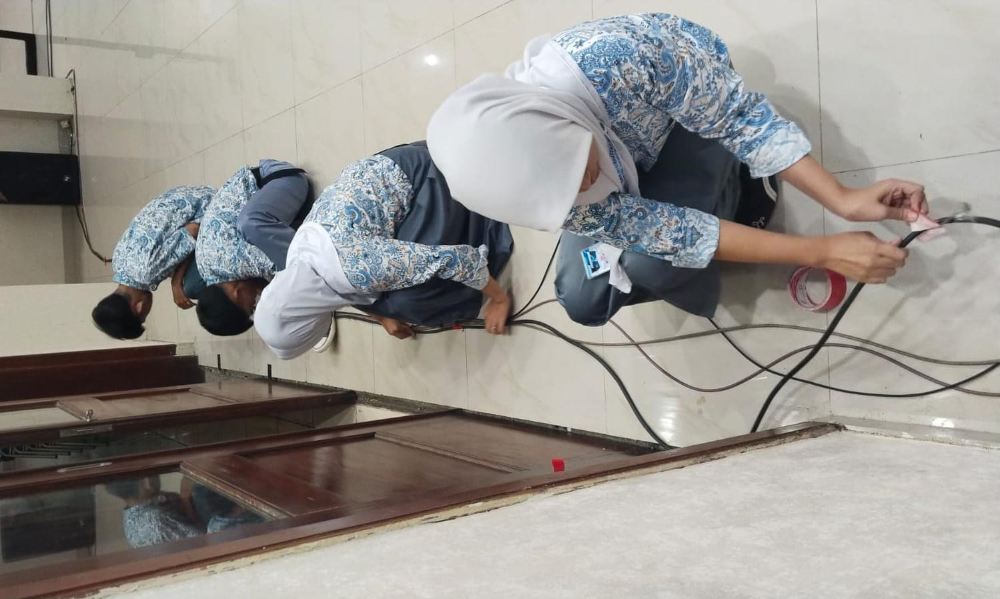
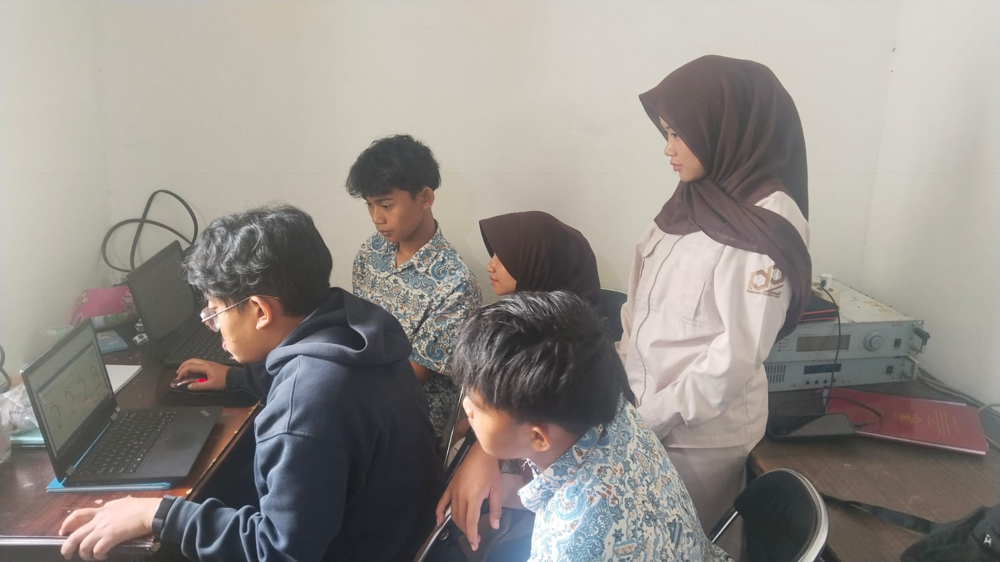
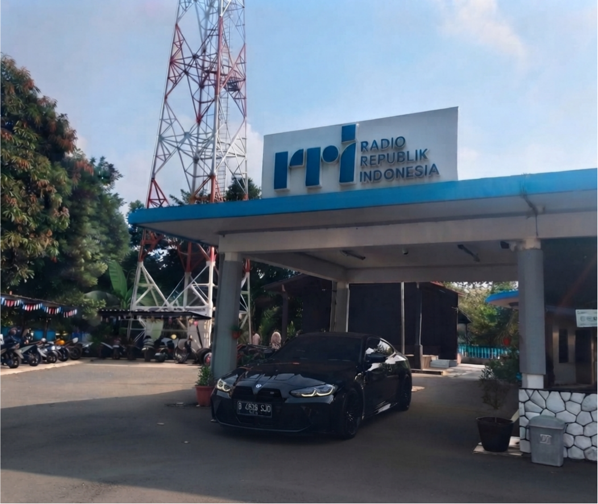
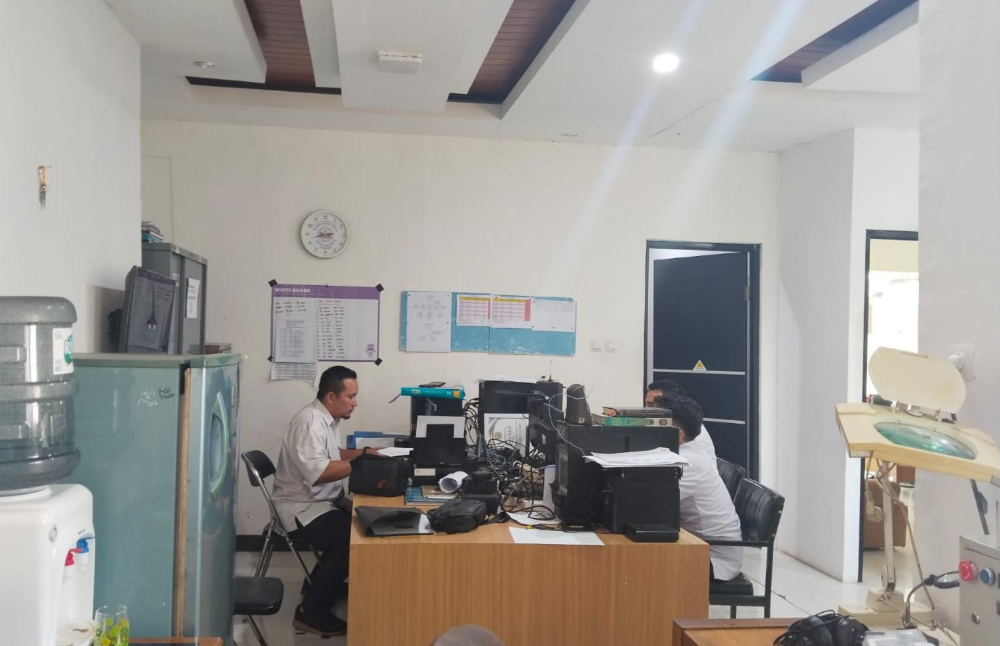
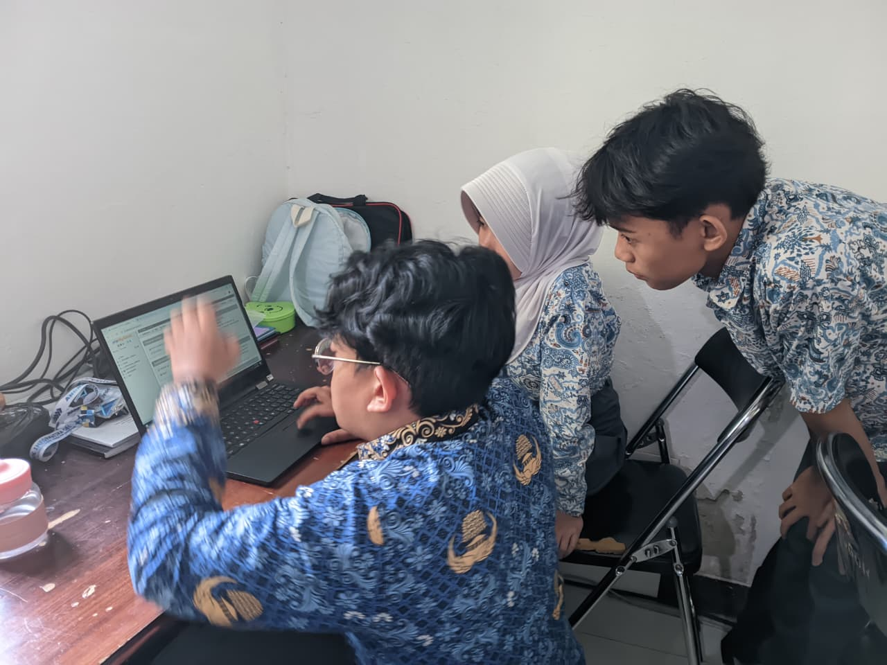
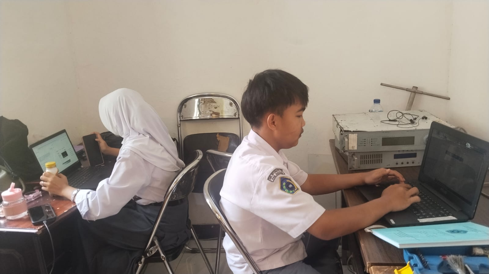

Sekali di Udara, Tetap di Udara. Menyampaikan informasi terpercaya, edukatif, dan menginspirasi masyarakat Indonesia.
Radio Republik Indonesia Bogor hadir sebagai Lembaga Penyiaran Publik yang menyampaikan informasi terpercaya, pendidikan, hiburan yang sehat, serta menjadi perekat sosial dan budaya bagi masyarakat.
Menyajikan informasi, pendidikan, budaya, dan hiburan yang berkualitas.
Didukung sumber daya manusia yang profesional dalam dunia penyiaran.
Dapat diakses melalui radio, streaming, website, dan media sosial.
Berkomitmen memberikan pelayanan informasi kepada seluruh masyarakat Indonesia.
Radio Republik Indonesia Bogor merupakan lembaga penyiaran publik yang berkomitmen memberikan informasi, pendidikan, hiburan yang sehat, kontrol sosial, serta melestarikan budaya bangsa melalui siaran radio dan media digital.
Landasan dalam memberikan layanan penyiaran publik yang profesional.
Menjadi lembaga penyiaran publik yang terpercaya, independen, dan berkelas dunia dalam melayani masyarakat.
RRI Bogor menghadirkan berbagai layanan penyiaran publik yang dapat diakses oleh masyarakat melalui berbagai platform.
Menyampaikan informasi, pendidikan, budaya, dan hiburan yang berkualitas kepada masyarakat.
Siaran dapat dinikmati secara daring melalui layanan streaming sehingga dapat diakses dari mana saja.
Menyajikan berita yang cepat, akurat, terpercaya, dan mudah diakses oleh masyarakat.
RRI Bogor bermula dari Radio Daerah Bogor (RDB) yang dikelola oleh AURI Lanud Atang Senjaya. Melalui SK Walikota No. 2360/6/1968, RDB resmi diserahkan kepada Direktorat Radio. Stasiun ini akhirnya diresmikan menjadi RRI Bogor pada tanggal 25 Juli 1968, dengan siaran perdananya. Stasiun ini beralamat di Jalan Pangrango No. 34 (sebelumnya No. 8), Kota Bogor. Sejak awal berdirinya, RRI Bogor memainkan peran penting sebagai media penyampai informasi lokal, nasional, serta pelestarian kebudayaan, yang juga menyiarkan program dalam bahasa Sunda.
Dokumentasi berbagai kegiatan dan aktivitas di Radio Republik Indonesia Bogor.






Kami siap memberikan pelayanan informasi kepada masyarakat.
Jl. Pangrango No. 34, Babakan, Kecamatan Bogor Tengah, Kota Bogor, Jawa Barat.
02518315484
sekrribogor@gmail.com
Senin - Minggu | 05.00 - 00.00 WIB
Tahun Mengudara
Program Siaran
Jam Siaran
Pelayanan Publik